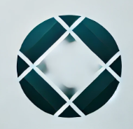

Hello!
I'm Terry Davis
American electrical engineer and computer programmer best known for creating and designing TempleOS, an operating system in the public domain, by himself.
DOWNLOAD CV
About
How did the development of TempleOS begin?
TempleOS (known as "J Operating System" from 2004 to 2005, "LoseThos" from 2006 to early 2012, and "SparrowOS" in late 2012) is an operating system similar to the Commodore 64, DESQview and other early DOS-based interfaces. It was written in a programming language developed by Davis called Holy C, which was a middle ground between C and C++. It was conceived by Davis in the early 2000s and developed alone over the course of a decade.